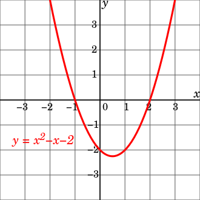

Dependent and independent variables
In mathematical modelling and statistical modelling, there are dependent variables (DV) and independent variables (IV). The models investigate how the former depend on the latter. The dependent variables represent the output or outcome whose variation is being studied. The independent variables represent inputs or causes, i.e. potential reasons for variation. Models test or explain the effects that the independent variables have on the dependent variables. Sometimes, independent variables may be included for other reasons, such as for their potential confounding effect, without a wish to test their effect directly.
In an experiment, the dependent variable is the event expected to change when the independent variable is manipulated.

In mathematics, a function is a rule for taking an input (usually number or set of numbers) and providing an output (which is also usually a number). A symbol that stands for an arbitrary input is called an independent variable, while a symbol that stands for an arbitrary output is called a dependent variable. The most common symbol for the input is x, and the most common symbol for the output is y; the function itself is commonly written y = f(x).
It is possible to have multiple independent variables and/or multiple dependent variables. For instance, in multivariable calculus, one often encounters functions of the form y=f(x1,x2), where y is a dependent variable and x1 and x2 are independent variables.
A simple linear (affine) function, as used in linear regression is defined by y = b0 + b1x. With multiple independent variables, the expression becomes: y = b0 + b1x1 + ... + bpxp, where p is the number of independent variables (also see the relationship with degrees of feedom). As illustated on the figure, a quadratic relationship between the independent and dependent variable may be described by: y = b0 + b1x + b2x2 (with b0 = -2, b1 = -1, b2 = 1 here).
Extraneous variables, if included in a regression as independent variables, may aid a researcher with accurate response parameter estimation, prediction, and goodness of fit, but are not of substantive interest to the hypothesis under examination. For example, in a study examining the effect of post-secondary education on lifetime earnings, some extraneous variables might be gender, ethnicity, social class, genetics, intelligence, age, and so forth. A variable is extraneous only when it can be assumed (or shown) to influence the dependent variable. If included in a regression, it can improve the fit of the model. If it is excluded from the regression and if it has a non-zero covariance with one or more of the independent variables of interest, its omission will bias the regression's result for the effect of that independent variable of interest. This effect is called confounding or omitted variable bias; in these situations, design changes and/or statistical control is necessary.
Depending on the context, an independent variable is sometimes called a "predictor variable", "regressor", "controlled variable", "manipulated variable", "explanatory variable", "exposure variable" (see reliability theory), "risk factor" (see medical statistics), "feature" (in machine learning and pattern recognition) or "input variable."
Depending on the context, a dependent variable is sometimes called a "response variable", "regressand", "predicted variable", "measured variable", "explained variable", "experimental variable", "responding variable", "outcome variable", "output variable" or "label".
"Explanatory variable" is preferred by some authors over "independent variable" when the quantities treated as independent variables may not be statistically independent or independently manipulable by the researcher. If the independent variable is referred to as an "explanatory variable" then the term "response variable" is preferred by some authors for the dependent variable.
"Explained variable" is preferred by some authors over "dependent variable" when the quantities treated as "dependent variables" may not be statistically dependent. If the dependent variable is referred to as an "explained variable" then the term "predictor variable" is preferred by some authors for the independent variable.
Variables may also be referred to by their form: continuous, binary/dichotomous, nominal categorical, and ordinal categorical, among others.